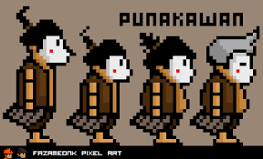

Unggah-ungguh basa yaiku tataraning basa Jawa manut utawa miturut panggenane lan kanggo ngajeni wong liya kang diajak lawan rembug. Unggah-ungguh basa uga disebut undha usuk basa. Yaiku tembung undha lan tembung ungguh ateges inggil, menawi tembung usuk lan tembung unggah ateges landasan utawa panggonan (Ahmad, dkk, 2010:52). Miturut Sudaryanto unggah- ungguh kaperang dados kalih, yaiku: ngoko lan krama. Ngoko kaperang malih dados ngoko/ngoko lugu lan ngoko alus. Krama kaperang malih dados krama lugu lan krama alus.
BASA NGOKO
Ngoko lugu
Ngoko lugu yaiku basa ngoko sing ora kecampuran tembung-tembung krama inggil tumrap wong sing diajak pacaturan, wuwuhane tetep ngoko, sipate rumaket utawa akrab.
Penganggone:
Dienggo dening sapadha-padha kang wis kulina.
Dienggo ndhuwuran marang andhahan.
Dienggo wong kang wis tuwa marang sing enom, kayata: wong tuwa marang anake, guru marang muride, eyang marang putune, lan sapanunggalane.
Tuladha:
Kowe gelem turu kene, Mbak?
Kowe sesuk apa sida lunga?
Kowe ditukokake jajan pasar?
Ngoko alus
Ngoko alus yaiku basa ngoko sing kecampuran tembung-tembung krama inggil tumrap wong sing diajak pacaturan, krama inggil khusus kanggo wong liya, wuwuhan tetep wuwuhan ngoko, tembung kowe dadi panjenengan.
Penganggone:
Sedulur enom marang sedulur tuwa.
Wong sing kaprenah tuwa marang wong enom sing drajade luwih dhuwur.
Ibu marang bapak sing wis kulina nganggo basa ngoko.
Tuladha:
Panjenengan kersa sare kene Mbak?
Panjenengan sesuk apa sida tindak?
Panjenengan dipundhutake jajan pasar

BASA KRAMA
Basa krama diperang dadi loro, yaiku:
Krama lugu
Basa krama lugu yaiku basa krama sing tembung-tembunge lugu lan ora kecampuran tembung-tembung krama inggil tumrap wong sing diajak pacaturan. Tuladane tembung kowe dadi sampeyan, tembung aku dadi kula.
Penganggone: Marang wong sadrajad sing durung raket (durung akrab).
Tuladha:
Sampeyan purun tilem mriki Mbak?
Sampeyan benjing menapa tamtu kesah?
Sampeyan dipuntumbasaken jajan pasar?
Krama alus
Basa krama alus yaiku basa krama sig tembung-tembunge alus lan kecampuran tembung-tembung krama inggil tumrap wong sing diajak pacaturan.
Penganggone:
Wong enom marang wong tuwa
Anak marang bapak utawa ibune
Putu marang eyang utawa simbahe
Ponakan marang pakdhe utawa budhene, lan sapanunggalane
Marang wong sing luwih dhuwir drajade
Murid marang gurune
Andhahan marang pimpinane
Abdi utawa rewang marang juragane, lan sapanunggalane